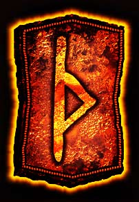

–¢–æ–ª–∫–æ–≤–∞–Ω–∏–µ —Ä—É–Ω. –†—É–Ω–∞ –¢—É—Ä–∏—Å–∞–∑ (Thurisaz) –∑–Ω–∞—á–µ–Ω–∏–µ —Ä—É–Ω—ã.
–ü—Ä—è–º–æ–µ –ø–æ–ª–æ–∂–µ–Ω–∏–µ.
–ò–º—è —Ä—É–Ω—ã: –¢—É—Ä–∏—Å–∞–∑ ,–¢—É—Ä–∏—Å–∞—Å (Thurisaz)
–ì–ª–∞–≤–Ω–æ–µ –∑–Ω–∞—á–µ–Ω–∏–µ —Ä—É–Ω—ã –¢—É—Ä–∏—Å–∞–∑,–¢—É—Ä–∏—Å–∞—Å (Thurisaz) – –≤—Ä–∞—Ç–∞.
–ë—É–∫–≤–∞–ª—å–Ω–æ–µ –∑–Ω–∞—á–µ–Ω–∏–µ —Ä—É–Ω—ã –¢—É—Ä–∏—Å–∞–∑,–¢—É—Ä–∏—Å–∞—Å (Thurisaz): —à–∏–ø, —É–∫–æ–ª, –¥–≤–µ—Ä—å, –≤—Ä–∞—Ç–∞
–î—Ä–µ–≤–Ω–µ–µ –≥–µ—Ä–º–∞–Ω—Å–∫–æ–µ –Ω–∞–∏–º–µ–Ω–æ–≤–∞–Ω–∏–µ, –∑–Ω–∞—á–µ–Ω–∏–µ —Ä—É–Ω—ã –¢—É—Ä–∏—Å–∞—Å, –¢—É—Ä–∏—Å–∞–∑ (Thurisaz) : Thyth (Thurisaz)
Старое норвежское наименование, значение руны Турисас, Турисаз (Thurisaz) : þurisaR или Thurse
–ê–Ω–≥–ª–æ-—Å–∞–∫—Å–æ–Ω—Å–∫–æ–µ –Ω–∞–∏–º–µ–Ω–æ–≤–∞–Ω–∏–µ, –∑–Ω–∞—á–µ–Ω–∏–µ —Ä—É–Ω—ã –¢—É—Ä–∏—Å–∞—Å, –¢—É—Ä–∏—Å–∞–∑ (Thurisaz) : Thorn
–î—Ä–µ–≤–Ω–µ–µ –∫–µ–ª—å—Ç—Å–∫–æ–µ –Ω–∞–∏–º–µ–Ω–æ–≤–∞–Ω–∏–µ, –∑–Ω–∞—á–µ–Ω–∏–µ —Ä—É–Ω—ã –¢—É—Ä–∏—Å–∞—Å, –¢—É—Ä–∏—Å–∞–∑ (Thurisaz): Thiuth
Старое исландское наименование, значение руны Турисас, Турисаз (Thurisaz): þurs
–†—É–Ω–∞ –¢—É—Ä–∏—Å–∞–∑,–¢—É—Ä–∏—Å–∞—Å (Thurisaz) – –º–æ—â–Ω–∞—è —Ä—É–Ω–∞. –≠—Ç–æ —Ä—É–Ω–∞ –∫—Ä–∏—Ç–∏—á–µ—Å–∫–æ–π —Å–∏—Ç—É–∞—Ü–∏–∏, –∫–æ—Ç–æ—Ä–∞—è —Ç—Ä–µ–±—É–µ—Ç –æ—Ç –í–∞—Å –ø–æ–ª–Ω–æ–π –æ—Ç–¥–∞—á–∏.
Это время для размышления и получения ответов. Руна Турисаз,Турисас (Thurisaz) приглашает вас принять решение. Проанализируйте прошлое, сделайте выводы и делайте шаг, но помните, не стоит тянуть прошлое в новую жизнь. Врата – это новые возможности, новые горизонты. И только от вас зависит, насколько это новое действительно станет новым для вас, без старого груза того, что стоит оставить в прошлом.
–¢–û–õ–ö–û–í–ê–ù–ò–ï –ó–ù–ê–ß–ï–ù–ò–Ø –î–†–£–ì–ò–• –†–£–ù
 —Ä—É–Ω–∞ –§–ï–•–£
—Ä—É–Ω–∞ –§–ï–•–£  —Ä—É–Ω–∞ –£–†–£–ó
—Ä—É–Ω–∞ –£–†–£–ó  —Ä—É–Ω–∞ –¢–£–†–ò–°–ê–ó
—Ä—É–Ω–∞ –¢–£–†–ò–°–ê–ó  —Ä—É–Ω–∞ –ê–ù–°–£–ó
—Ä—É–Ω–∞ –ê–ù–°–£–ó  —Ä—É–Ω–∞ –†–ê–ô–î–û
—Ä—É–Ω–∞ –†–ê–ô–î–û  —Ä—É–Ω–∞ –ö–ï–ù–ê–ó
—Ä—É–Ω–∞ –ö–ï–ù–ê–ó  —Ä—É–Ω–∞ –ì–ï–ë–û
—Ä—É–Ω–∞ –ì–ï–ë–û  —Ä—É–Ω–∞ –í–£–ù–¨–û
—Ä—É–Ω–∞ –í–£–ù–¨–û  —Ä—É–Ω–∞ –•–ê–ì–ê–õ–õ
—Ä—É–Ω–∞ –•–ê–ì–ê–õ–õ  —Ä—É–Ω–∞ –ù–ê–£–¢–ò–ó
—Ä—É–Ω–∞ –ù–ê–£–¢–ò–ó  —Ä—É–Ω–∞ –ò–°–ê
—Ä—É–Ω–∞ –ò–°–ê  —Ä—É–Ω–∞ –ô–ï–†
—Ä—É–Ω–∞ –ô–ï–†  —Ä—É–Ω–∞ –≠–ô–í–ê–ó
—Ä—É–Ω–∞ –≠–ô–í–ê–ó  —Ä—É–Ω–∞ –ü–ï–†–¢
—Ä—É–Ω–∞ –ü–ï–†–¢  —Ä—É–Ω–∞ –ê–õ–¨–ì–ò–ó
—Ä—É–Ω–∞ –ê–õ–¨–ì–ò–ó  —Ä—É–Ω–∞ –°–û–£–õ–£
—Ä—É–Ω–∞ –°–û–£–õ–£  —Ä—É–Ω–∞ –¢–ï–ô–í–ê–ó
—Ä—É–Ω–∞ –¢–ï–ô–í–ê–ó  —Ä—É–Ω–∞ –ë–ï–†–ö–ê–ù–û
—Ä—É–Ω–∞ –ë–ï–†–ö–ê–ù–û  —Ä—É–Ω–∞ –ú–ê–ù–ê–ó
—Ä—É–Ω–∞ –ú–ê–ù–ê–ó  —Ä—É–Ω–∞ –õ–ê–ì–£–ó
—Ä—É–Ω–∞ –õ–ê–ì–£–ó  —Ä—É–Ω–∞ –û–¢–ê–õ–ê
—Ä—É–Ω–∞ –û–¢–ê–õ–ê  —Ä—É–Ω–∞ –≠–í–ê–ó
—Ä—É–Ω–∞ –≠–í–ê–ó  —Ä—É–Ω–∞ –ò–ù–ì–£–ó
—Ä—É–Ω–∞ –ò–ù–ì–£–ó  —Ä—É–Ω–∞ –î–ê–ì–ê–ó
—Ä—É–Ω–∞ –î–ê–ì–ê–ó
–†—É–Ω–∞ –¢—É—Ä–∏—Å–∞–∑ (Thurisaz) –∑–Ω–∞—á–µ–Ω–∏–µ —Ä—É–Ω—ã. –ë–û–õ–ï–ï –ü–û–î–†–û–ë–ù–û
–°–∏–º–≤–æ–ª–∞–º–∏ —Ä—É–Ω—ã –¢—É—Ä–∏—Å–∞–∑,–¢—É—Ä–∏—Å–∞—Å (Thurisaz) —è–≤–ª—è—é—Ç—Å—è –≤–æ—Ä–æ—Ç–∞ —Ä–∞–∑–º–µ–∂–µ–≤–∞–Ω–∏—è –≥—Ä–∞–Ω–∏—Ü –º–µ–∂–¥—É –Ω–µ–±–µ—Å–∞–º–∏ –∏ –º–∏—Ä–æ–º –º–∞—Ç–µ—Ä–∏–∞–ª—å–Ω—ã–º, —Ä—É–Ω–∞ –¢—É—Ä–∏—Å–∞–∑,–¢—É—Ä–∏—Å–∞—Å (Thurisaz) —É–∫–∞–∑—ã–≤–∞–µ—Ç , —á—Ç–æ –Ω–∞—Å—Ç–∞–ª –º–æ–º–µ–Ω—Ç –∏—Å—Ç–∏–Ω—ã –∏ —É–∂–µ –Ω–µ–æ–±—Ö–æ–¥–∏–º–æ –≤—ã–ø–æ–ª–Ω–∏—Ç—å —Å–ª–æ–∂–Ω—É—é –≤–Ω—É—Ç—Ä–µ–Ω–Ω—é—é —Ä–∞–±–æ—Ç—É – —Ç–æ –µ—Å—Ç—å –æ–±–æ–≥–∞—Ç–∏—Ç—å —Å–≤–æ–π –æ–ø—ã—Ç —Å–≤–µ—Ç–ª–æ–π —ç–Ω–µ—Ä–≥–∏–µ–π –Ω–∞—Å—Ç–æ–ª—å–∫–æ, —á—Ç–æ–±—ã –µ–≥–æ —Å—É—â–Ω–æ—Å—Ç—å –∑–∞—Å–∏—è–ª–∞ —á–∏—Å—Ç–æ—Ç–æ–π –ø–æ–º—ã—Å–ª–æ–≤. –†—É–Ω–∞ –¢—É—Ä–∏—Å–∞–∑,–¢—É—Ä–∏—Å–∞—Å (Thurisaz) –≥–æ–≤–æ—Ä–∏—Ç –Ω–∞–º –æ–± —É—Å–∫–æ—Ä–µ–Ω–∏–∏ —Ç–µ–º–ø–æ–≤ –í–∞—à–µ–≥–æ –¥—É—Ö–æ–≤–Ω–æ–≥–æ —Ä–∞–∑–≤–∏—Ç–∏—è.
–ù–æ –∏ –¥–∞–∂–µ –≤ —ç—Ç–æ—Ç –ø–µ—Ä–∏–æ–¥ –∏–Ω—Ç–µ–Ω—Å–∏–≤–Ω–æ–π –ø—Ä–æ–≥—Ä–µ—Å—Å–∏–∏ –í—ã –≤—Å–µ–≥–¥–∞ –¥–æ–ª–∂–Ω—ã –Ω–∞–π—Ç–∏ –ø–æ–≤–æ–¥ —Å–¥–µ–ª–∞—Ç—å –æ—Å—Ç–∞–Ω–æ–≤–∫—É, –Ω–∞–π—Ç–∏ –≤—Ä–µ–º—è –¥–ª—è –ø–µ—Ä–µ–æ—Å–º—ã—Å–ª–µ–Ω–∏—è —Å—Ç–∞—Ä–æ–≥–æ, –Ω–∞–π—Ç–∏ –≤ –ø—Ä–æ—à–ª–æ–º –º–µ—Å—Ç–æ –¥–ª—è —Ç–æ–≥–æ, —á—Ç–æ –±—ã –∏–Ω—Ç–µ–≥—Ä–∏—Ä–æ–≤–∞—Ç—å –Ω–æ–≤—ã–µ –¥—É—Ö–æ–≤–Ω—ã–µ –¥–æ—Å—Ç–∏–∂–µ–Ω–∏—è. –î—Ä—É–≥–∏–º–∏ —Å–ª–æ–≤–∞–º–∏- –Ω–µ –ø—ã—Ç–∞–π—Ç–µ—Å—å –ø–æ–∫–∏–Ω—É—Ç—å –º–µ—Å—Ç–æ, –∫—É–¥–∞ –≤—ã –µ—â–µ –Ω–µ –ø–æ–ø–∞–ª–∏. –í–∞–º –¥–æ–ª–∂–Ω–æ —Å–æ–±–ª—é—Å—Ç–∏ –≤–Ω—É—Ç—Ä–µ–Ω–Ω–µ —Å–ø–æ–∫–æ–π—Å—Ç–≤–∏–µ , –ø—Ä–æ—è–≤–∏—Ç—å –≤—ã–¥–µ—Ä–∂–∫—É ,—Å–æ—Ö—Ä–∞–Ω–∏—Ç—å —Å–∞–º–æ–æ–±–ª–∞–¥–∞–Ω–∏–µ –∏ –ø–æ–ª–æ–∂–∏—Ç—å—Å—è –Ω–∞ –ù–µ–±–µ—Å–∞. –†—É–Ω–∞ –¢—É—Ä–∏—Å–∞–∑,–¢—É—Ä–∏—Å–∞—Å (Thurisaz) –ø—Ä–µ–¥–≤–µ—â–∞–µ—Ç –Ω–∞—á–∞–ª–æ –¥–µ–π—Å—Ç–≤–∏—è –≥–ª—É–±–∏–Ω–Ω—ã—Ö —Å–∏–ª –ø—Ä–æ–≥—Ä–µ—Å—Å–∞ –∏ —Ç—Ä–∞–Ω—Å—Ñ–æ—Ä–º–∞—Ü–∏–∏.
—Ä—É–Ω–∞ –¢—É—Ä–∏—Å–∞–∑,–¢—É—Ä–∏—Å–∞—Å (Thurisaz). –¢–æ–ª–∫–æ–≤–∞–Ω–∏–µ –ø—Ä–∏ –≥–∞–¥–∞–Ω–∏–∏ , –∑–Ω–∞—á–µ–Ω–∏–µ —Ä—É–Ω—ã –¢—É—Ä–∏—Å–∞–∑,–¢—É—Ä–∏—Å–∞—Å (Thurisaz):
–ü—Ä—è–º–æ–µ –ø–æ–ª–æ–∂–µ–Ω–∏–µ —Ä—É–Ω—ã –¢—É—Ä–∏—Å–∞–∑,–¢—É—Ä–∏—Å–∞—Å (Thurisaz)
–ì–ª–∞–≤–Ω—ã–µ —Ç–µ–∑–∏—Å—ã. –î–µ–π—Å—Ç–≤–∏–µ; –≤—Ä–∞—Ç–∞; –∞–∫—Ç–∏–≤–Ω–∞—è –∑–∞—â–∏—Ç–∞; —ç—Ñ—Ñ–µ–∫—Ç–∏–≤–Ω–æ—Å—Ç—å; –ø—É—Ç–µ—à–µ—Å—Ç–≤–∏–µ, –ø–µ—Ä–µ–µ–∑–¥; –≤–ª–∞—Å—Ç—å; —É–¥–∞—á–∞; —É—Å—Ç—Ä–∞–Ω–µ–Ω–∏–µ –ø—Ä–µ–ø—è—Ç—Å—Ç–≤–∏–π.
–†—É–Ω–∞ –¢—É—Ä–∏—Å–∞–∑,–¢—É—Ä–∏—Å–∞—Å (Thurisaz) –æ–∑–Ω–∞—á–∞–µ—Ç, —á—Ç–æ –≤—Å—Ç—É–ø–∞–µ—Ç–µ –≤ –ø–µ—Ä–∏–æ–¥ –∏—Å–ø—ã—Ç–∞–Ω–∏–π –∏ –ø—Ä–µ–ø—è—Ç—Å—Ç–≤–∏–π. –í—Å–µ –∑–∞–≤–∏—Å–∏—Ç —Ç–æ–ª—å–∫–æ –æ—Ç –í–∞—Å. –í–æ–ª–Ω—É—é—â–∞—è –í–∞—Å —Å–∏—Ç—É–∞—Ü–∏—è, –ø–æ—Ç—Ä–µ–±—É–µ—Ç –æ—Ç –í–∞—Å –≤—Å–µ—Ü–µ–ª–æ–≥–æ —Å–∞–º–æ–æ–≥—Ä–∞–Ω–∏—á–µ–Ω–∏—è, –ø–æ–ª–Ω–æ–π —Å–æ—Å—Ä–µ–¥–æ—Ç–æ—á–µ–Ω–Ω–æ—Å—Ç–∏ –∏ —Å–µ—Ä—å–µ–∑–Ω—ã—Ö —Ä–∞–∑–º—ã—à–ª–µ–Ω–∏–π. –ü–æ–∫–∞ –í—ã –Ω–µ –ø—Ä–∏–º–µ—Ç–µ —Ö–æ—Ä–æ—à–æ –ø—Ä–æ–¥—É–º–∞–Ω–Ω–æ–≥–æ —Ä–µ—à–µ–Ω–∏—è, –Ω–µ –Ω—É–∂–Ω–æ –¥–µ–π—Å—Ç–≤–æ–≤–∞—Ç—å. –ö–∞–∫ –≥–æ–≤–æ—Ä–∏—Ç—Å—è, —Å–µ–º—å —Ä–∞–∑ –æ—Ç–º–µ—Ä—å, –∏ —Ç–æ–ª—å–∫–æ –ø–æ—Ç–æ–º –æ–¥–∏–Ω —Ä–∞–∑ –æ—Ç—Ä–µ–∂—å. –í–∞–º –∫–∞–∂–µ—Ç—Å—è, —á—Ç–æ —Å—É–¥—å–±–∞ —Å—ã–≥—Ä–∞–ª–∞ —Å –í–∞–º–∏ –∑–ª—É—é —à—É—Ç–∫—É. –ù–æ –Ω–∞ —Å–∞–º–æ–º –¥–µ–ª–µ —ç—Ç–æ –≤—Å—ë —ç—Ç–æ –º–µ–ª–æ—á–∏. –°—É–¥—å–±–∞ —Ö–æ—á–µ—Ç –ø—Ä–æ—Å—Ç–æ, —á—Ç–æ–±—ã –í—ã –æ—Å—Ç–∞–Ω–æ–≤–∏–ª–∏—Å—å –∏ –æ–±—Ä–∞—Ç–∏–ª–∏ –≤–Ω–∏–º–∞–Ω–∏–µ –Ω–∞ —Ç–æ, —á—Ç–æ –í—ã –º–æ–∂–µ—Ç–µ –ø—Ä–æ–π—Ç–∏ –º–∏–º–æ —Å–≤–æ–µ–≥–æ —Å—á–∞—Å—Ç—å—è. –í –ª–∏—á–Ω—ã—Ö –∏ –¥–µ–ª–æ–≤—ã—Ö –æ—Ç–Ω–æ—à–µ–Ω–∏—è—Ö –≤ –¥–∞–Ω–Ω—ã–π –º–æ–º–µ–Ω—Ç –≥–ª–∞–≤–Ω—ã–º –í–∞—à–∏–º –≤—Ä–∞–≥–æ–º —è–≤–ª—è–µ—Ç—Å—è —Å–ø–µ—à–∫–∞. –í–∞–º –Ω—É–∂–Ω–æ –ø—Ä–æ–∞–Ω–∞–ª–∏–∑–∏—Ä–æ–≤–∞—Ç—å –ø—Ä–æ—à–ª—ã–π –æ–ø—ã—Ç.
–°–æ–≤–µ—Ç —Ä—É–Ω—ã –¢—É—Ä–∏—Å–∞–∑,–¢—É—Ä–∏—Å–∞—Å (Thurisaz). –°–æ–≤–µ—Ç —Ä—É–Ω—ã –¢—É—Ä–∏—Å–∞–∑,–¢—É—Ä–∏—Å–∞—Å (Thurisaz). –°–ø–µ—à–∫–∞ –Ω–∏ –∫ —á–µ–º—É. –ñ–¥–∏—Ç–µ —Ä–∞–∑–º—ã—à–ª—è—è. –≠—Ç–æ –≤—Ä–µ–º—è –¥–ª—è –ø–µ—Ä–µ–æ—Ü–µ–Ω–∫–∏ —Å–∏—Ç—É–∞—Ü–∏–∏, –∞ –Ω–µ –¥–ª—è –¥–µ–π—Å—Ç–≤–∏–π. –í–∞—Å –∂–¥—ë—Ç –Ω–æ–≤—ã–π –ø—É—Ç—å, –ø–æ—Å–ª–µ –∏ —Ç–æ–≥–æ –∏ –¥—Ä—É–≥–æ–≥–æ.
–¢–æ–ª–∫–æ–≤–∞–Ω–∏–µ –∑–Ω–∞—á–µ–Ω–∏—è —Ä—É–Ω—ã –¢—É—Ä–∏—Å–∞–∑ –ø—Ä–∏ –≥–∞–¥–∞–Ω–∏–∏ –Ω–∞ –ª—é–±–æ–≤—å –∏–ª–∏ –æ—Ç–Ω–æ—à–µ–Ω–∏—è.
–ü–æ—è–≤–ª–µ–Ω–∏–µ —Ä—É–Ω—ã –¢—É—Ä–∏—Å–∞–∑ –ø—Ä–∏ –≥–∞–¥–∞–Ω–∏–∏ –Ω–∞ –ª—é–±–æ–≤—å –∏–ª–∏ –æ—Ç–Ω–æ—à–µ–Ω–∏—è –ø—Ä–µ–¥—Å–∫–∞–∑—ã–≤–∞–µ—Ç —É–¥–∞—á—É –∏ —É—Å–ø–µ—Ö. –≠—Ç–æ –º–æ–∂–µ—Ç –æ—Ç–æ–±—Ä–∞–∂–∞—Ç—å—Å—è –Ω–µ —Ç–æ–ª—å–∫–æ –≤ –ª—é–±–≤–∏ –∏ –æ—Ç–Ω–æ—à–µ–Ω–∏—è—Ö , –∞ –∏ –≤–æ –≤—Å–µ—Ö –¥—Ä—É–≥–∏—Ö –æ–±–ª–∞—Å—Ç—è—Ö – –¥–µ–ª–∞, –∑–¥–æ—Ä–æ–≤—å–µ, –∫–∞—Ä—å–µ—Ä–∞. –ù–∞—Å—Ç—É–ø–∞–µ—Ç –ø–µ—Ä–∏–æ–¥, –∫–æ–≥–¥–∞ –Ω–∞—á–∏–Ω–∞—é—Ç –æ—Å—É—â–µ—Å—Ç–≤–ª—è—é—Ç—Å—è –≤—Å–µ –≤–∞—à–∏ –∑–∞–º—ã—Å–ª—ã. –¢–∞–∫–∂–µ —ç—Ç–∞ —Ä—É–Ω–∞ –¢—É—Ä–∏—Å–∞–∑ –≥–æ–≤–æ—Ä–∏—Ç –æ –Ω–µ–æ–±—Ö–æ–¥–∏–º–æ–π –ø–æ–º–æ—â–∏ —Å–æ —Å—Ç–æ—Ä–æ–Ω—ã. –í–µ—Ä–æ—è—Ç–Ω–µ–µ –≤—Å–µ–≥–æ, –¥–ª—è —Ä–µ—à–µ–Ω–∏—è –ø—Ä–æ–±–ª–µ–º –≤ –≤–∞—à–∏—Ö –æ—Ç–Ω–æ—à–µ–Ω–∏—è—Ö —Å –ª—é–±–∏–º—ã–º —á–µ–ª–æ–≤–µ–∫–æ–º –í–∞–º –ø—Ä–∏–¥–µ—Ç—å—Å—è –æ–±—Ä–∞—Ç–∏—Ç—å—Å—è –∑–∞ —Å–æ–≤–µ—Ç–æ–º –∫ –∑–Ω–∞—é—â–µ–º—É –æ–ø—ã—Ç–Ω–æ–º—É –≤ –Ω–µ–æ–¥–Ω–æ–∑–Ω–∞—á–Ω–æ—Å—Ç–∏ –æ—Ç–Ω–æ—à–µ–Ω–∏–π —á–µ–ª–æ–≤–µ–∫—É.
–†—É–Ω–∞ –¢—É—Ä–∏—Å–∞–∑ –ø—Ä–µ–¥–≤–µ—â–∞–µ—Ç –≤ –ª—é–±–≤–∏ –Ω–∞—Å—Ç—É–ø–∏–ª–µ–Ω–∏–µ –º–æ–º–µ–Ω—Ç–∞ –æ—Å–º—ã—Å–ª–µ–Ω–∏—è. –í—ã —Å—Ç–æ–∏—Ç–µ –Ω–∞ –ø–æ—Ä–æ–≥–µ –ø—Ä–∏–Ω—è—Ç–∏—è –æ—á–µ–Ω—å –≤–∞–∂–Ω–æ–≥–æ –∂–∏–∑–Ω–µ–Ω–Ω–æ–≥–æ —Ä–µ—à–µ–Ω–∏—è –æ –ø–µ—Ä–µ—Ä–æ—Å—Ç–∞–Ω–∏–∏ –≤–∞—à–∏—Ö –æ—Ç–Ω–æ—à–µ–Ω–∏–π —Å –ø–∞—Ä—Ç–Ω–µ—Ä–æ–º –Ω–∞ –Ω–æ–≤—ã–π –∫–∞—á–µ—Å—Ç–≤–µ–Ω–Ω—ã–π —É—Ä–æ–≤–µ–Ω—å. –†—É–Ω–∞ –¢—É—Ä–∏—Å–∞–∑ —Ö–∞—Ä–∞–∫—Ç–µ—Ä–∏–∑—É–µ—Ç –±–ª–∏–∑–∫–æ–≥–æ –≤–∞–º —á–µ–ª–æ–≤–µ–∫–∞ –∫–∞–∫ —á–µ–ª–æ–≤–µ–∫–∞ —Å–∏–ª—å–Ω–æ–≥–æ –¥—É—Ö–æ–≤–Ω–æ, –Ω–∞–¥–µ–∂–Ω–æ–≥–æ, —Å–ø–æ—Å–æ–±–Ω–æ–≥–æ –æ–≥—Ä–∞–¥–∏—Ç—å –≤–∞—Å –æ—Ç –Ω–µ–ø—Ä–∏—è—Ç–Ω–æ—Å—Ç–µ–π. –¢–∞–∫–∂–µ –†—É–Ω–∞ –¢—É—Ä–∏—Å–∞–∑ –º–æ–∂–µ—Ç —Ç–æ–ª–∫–æ–≤–∞—Ç—å—Å—è –≤ –∑–Ω–∞—á–µ–Ω–∏–∏ –≤–∑–∞–∏–º–æ–≤—ã—Ä—É—á–∫–∏ –∏–ª–∏ –∂–µ–ª–∞–Ω–∏–∏ –æ–∫–∞–∑–∞—Ç—å –ø–æ–º–æ—â—å –±–ª–∏–∑–∫–æ–º—É –≤–∞–º —á–µ–ª–æ–≤–µ–∫—É.
–†–£–ù–ê –¢—É—Ä–∏—Å–∞–∑,–¢—É—Ä–∏—Å–∞—Å (Thurisaz). –í–Ω—É—Ç—Ä–µ–Ω–Ω–µ–µ —Å–æ–¥–µ—Ä–∂–∞–Ω–∏–µ :
–¢—É—Ä–∏—Å–∞–∑,–¢—É—Ä–∏—Å–∞—Å (Thurisaz) – —ç—Ç–æ –ª—É—á–∏ —ç–Ω–µ—Ä–≥–∏–∏, —á—Ç–æ —Ä–∞—Å—á–∏—â–∞—é—Ç –ø—É—Ç—å –°–≤–µ—Ç—É —Å—Ä–µ–¥–∏ —Å–ª—É—á–∞–π–Ω–æ—Å—Ç–µ–π –∏ —Å–∏–ª –•–∞–æ—Å–∞. –†—É–Ω–∞ –¢—É—Ä–∏—Å–∞–∑,–¢—É—Ä–∏—Å–∞—Å (Thurisaz) –µ—Å—Ç—å —Å–∏–º–≤–æ–ª —Ä–∞–∑—Ä—É—à–∏—Ç–µ–ª—è —Å–∏–ª –•–∞–æ—Å–∞, –≤—Ä–∞–∂–¥–µ–±–Ω–æ–≥–æ –ö–æ—Å–º–∏—á–µ—Å–∫–æ–º—É –ø–æ—Ä—è–¥–∫—É. –†—É–Ω–∞ –¢—É—Ä–∏—Å–∞–∑,–¢—É—Ä–∏—Å–∞—Å (Thurisaz) –∑–∞—â–∏—â–∞–µ—Ç –Ω–∞—à –ö–æ—Å–º–æ—Å –æ—Ç –≤–æ–∑–≤—Ä–∞—â–µ–Ω–∏—è –∫ –•–∞–æ—Å—É. –í–æ—Ç –ø–æ—á–µ–º—É —Ä—É–Ω–∞ –∏–º–µ–µ—Ç —Ç–∞–∫–∂–µ –∑–∞—â–∏—Ç–Ω—ã–π –∞—Å–ø–µ–∫—Ç, —Ö–æ—Ç—è –ø—Ä–æ—è–≤–ª–µ–Ω–∏—è —Å–∏–ª—ã —Ä—É–Ω—ã –º–æ–≥—É—Ç –±—ã—Ç—å —Ä–∞–∑—Ä—É—à–∏—Ç–µ–ª—å–Ω—ã–º–∏ – –Ω–∞–ø—Ä–∞–≤–ª–µ–Ω–Ω—ã–º–∏ –Ω–∞ —É—Å—Ç—Ä–∞–Ω–µ–Ω–∏–µ –∑–∞—Å—Ç–∞—Ä–µ–ª–æ–≥–æ , –æ–∫–∞–º–µ–Ω–µ–≤—à–µ–≥–æ –∏ –∑–∞–º–µ–Ω—É –µ–≥–æ —á–µ–º-—Ç–æ –ª—É—á—à–∏–º, –±–æ–ª–µ–µ –ø—Ä–∞–≤–∏–ª—å–Ω—ã–º. –†—É–Ω–∞ –¢—É—Ä–∏—Å–∞–∑,–¢—É—Ä–∏—Å–∞—Å (Thurisaz) –≤ —ç—Ç–æ–º –∞—Å–ø–µ–∫—Ç–µ –º–æ–∂–µ—Ç —Ä–∞—Å—Å–º–∞—Ç—Ä–∏–≤–∞—Ç—å—Å—è –≤ –∫–∞—á–µ—Å—Ç–≤–µ –±–ª—é—Å—Ç–∏—Ç–µ–ª—è –∑–∞–∫–æ–Ω–∞ –∏ –ø–æ—Ä—è–¥–∫–∞.
–†—É–Ω–∞ –¢—É—Ä–∏—Å–∞–∑,–¢—É—Ä–∏—Å–∞—Å (Thurisaz) –∏–º–µ–µ—Ç –±–æ–ª—å—à–æ–π –ø–æ—Ç–µ–Ω—Ü–∏–∞–ª –¥–ª—è —Ä–∞—Å—á–∏—â–µ–Ω–∏—è –ø—É—Ç–∏ –∏ –≤–æ—Å—Å–æ–∑–¥–∞–Ω–∏—è –ø–æ—Ä—è–¥–∫–∞ —Ç–∞–º, –≥–¥–µ —Ä–∞–Ω–µ–µ —Ü–∞—Ä–∏–ª –±–µ—Å–ø–æ—Ä—è–¥–æ–∫. –≠—Ç–æ –Ω–µ —Å–∞–º–æ –ø—Ä–æ—è–≤–ª–µ–Ω–∏–µ –∂–∏–∑–Ω–µ—Ç–≤–æ—Ä–Ω—ã—Ö —Å–∏–ª, –∞ —Å–∫–æ—Ä–µ–µ –∏—Ö –ø–µ—Ä–µ–¥–∞—Ç—á–∏–∫, –ø—Ä–µ–æ–¥–æ–ª–µ–≤–∞—é—â–∏–π —Å–æ–ø—Ä–æ—Ç–∏–≤–ª–µ–Ω–∏–µ —Å—Ç–∞—Ä–æ–≥–æ –∏ –≤—ã—Å–≤–æ–±–æ–∂–¥–∞—é—â–∏–π —ç–Ω–µ—Ä–≥–∏—é, –Ω–∞–ø—Ä–∞–≤–ª–µ–Ω–Ω—É—é –¥–ª—è –Ω–∞—á–∞–ª–∞ –ø–µ—Ä–µ–º–µ–Ω. –†—É–Ω—É –¢—É—Ä–∏—Å–∞–∑,–¢—É—Ä–∏—Å–∞—Å (Thurisaz) –º–æ–∂–Ω–æ —Ä–∞—Å—Å–º–∞—Ç—Ä–∏–≤–∞—Ç—å –∫–∞–∫ “–ø—Ä–æ–±—É–∂–¥–∞—é—â—É—é” —ç–Ω–µ—Ä–≥–∏—é, –Ω–µ—Å—É—â—É—é –æ—Å–æ–∑–Ω–∞–Ω–∏–µ —Ç–æ–≥–æ, —á—Ç–æ —Å—É—â–µ—Å—Ç–≤—É–µ—Ç –≤ —Å—Ñ–µ—Ä–µ –ø–æ–¥—Å–æ–∑–Ω–∞—Ç–µ–ª—å–Ω–æ–π.
–¢–æ–ª–∫–æ–≤–∞–Ω–∏–µ —Ä—É–Ω. –†—É–Ω–∞ –¢—É—Ä–∏—Å–∞–∑,–¢—É—Ä–∏—Å–∞—Å (Thurisaz) —Ç–æ–ª–∫–æ–≤–∞–Ω–∏–µ, –∑–Ω–∞—á–µ–Ω–∏–µ —Ä—É–Ω—ã. –ú–∞–≥–∏—á–µ—Å–∫–æ–µ –ø—Ä–∏–º–µ–Ω–µ–Ω–∏–µ :
–õ—é–±–æ–≤—å; –ø–æ–∫—Ä–æ–≤–∏—Ç–µ–ª—å—Å—Ç–≤–æ; –∑–∞—â–∏—Ç–∞; –Ω–µ–π—Ç—Ä–∞–ª–∏–∑–∞—Ü–∏—è –≤—Ä–∞–≥–æ–≤; –∫–æ–Ω—Ç—Ä–æ–ª—å –Ω–∞–¥ —Å–∏—Ç—É–∞—Ü–∏–µ–π; –ø–æ–±–µ–¥–∞; –æ–±–µ—Ä–µ–≥ –æ—Ç —Å–∞–º–æ–æ–±–º–∞–Ω–∞ –∏ –æ–±–º–∞–Ω–∞; —É–¥–∞—á–∞ –ø—Ä–∏ –Ω–µ–ø—Ä–µ–¥—Å–∫–∞–∑—É–µ–º–æ–º —Ä–∞—Å–∫–ª–∞–¥–µ; —Å–ø–æ—Å–æ–±–Ω–æ—Å—Ç—å –∏ —Å–∏–ª–∞ –¥–ª—è —Ä–∞–∑–º—ã—à–ª–µ–Ω–∏—è, –∏–Ω—Ç—É–∏—Ü–∏—è –∏ —ç–Ω–µ—Ä–≥–∏—è –¥–ª—è –ø—Ä–∏–Ω—è—Ç–∏—è –ø—Ä–∞–≤–∏–ª—å–Ω—ã—Ö —Ä–µ—à–µ–Ω–∏–π, —Å–æ—Å—Ä–µ–¥–æ—Ç–æ—á–µ–Ω–∏–µ –≤—Å–µ—Ö –º—ã—Å–ª–µ–π.
–ü—Ä–∏–º–µ–Ω–µ–Ω–∏–µ –≤ —Ä—É–Ω–Ω—ã—Ö –∑–∞–ø–∏—Å—è—Ö (—Ä—É–Ω–µ—Å–∫—Ä–∏–ø—Ç–∞—Ö) , —Ç–∞–∫–∂–µ –ø—Ä–∏ –∏–∑–≥–æ—Ç–æ–≤–ª–µ–Ω–∏–∏ —Ä—É–Ω–∏—á–µ—Å–∫–æ–≥–æ –∞–º—É–ª–µ—Ç–∞:
–†—É–Ω–∞ –¢—É—Ä–∏—Å–∞—Å, –¢—É—Ä–∏—Å–∞–∑ (Thurisaz) –∑–Ω–∞—á–µ–Ω–∏–µ –≤ —Ä—É–Ω–µ—Å–∫—Ä–∏–ø—Ç–µ – –î–ª—è —É–Ω–∏—á—Ç–æ–∂–µ–Ω–∏—è –≤—Ä–∞–≥–æ–≤ –∏–ª–∏ –ø—Ä–æ—Ç–∏–≤–æ–¥–µ–π—Å—Ç–≤–∏—è –∏–º.
–†—É–Ω–∞ –¢—É—Ä–∏—Å–∞—Å, –¢—É—Ä–∏—Å–∞–∑ (Thurisaz) –∑–Ω–∞—á–µ–Ω–∏–µ –≤ —Ä—É–Ω–µ—Å–∫—Ä–∏–ø—Ç–µ – –î–ª—è –ø—Ä–∏—Ç—è–≥–∏–≤–∞–Ω–∏—è —É–¥–∞—á–∏ ,–¥–ª—è –∑–∞—â–∏—Ç—ã, –¥–ª—è –∫–æ–Ω—Ç—Ä–æ–ª—è –Ω–∞–¥ –æ–±—Å—Ç–æ—è—Ç–µ–ª—å—Å—Ç–≤–∞–º–∏.
–†—É–Ω–∞ –¢—É—Ä–∏—Å–∞—Å, –¢—É—Ä–∏—Å–∞–∑ (Thurisaz) –∑–Ω–∞—á–µ–Ω–∏–µ –≤ —Ä—É–Ω–µ—Å–∫—Ä–∏–ø—Ç–µ – –î–ª—è –ø—Ä–∏—Ç—è–≥–∏–≤–∞–Ω–∏—è –≤–Ω–∏–º–∞–Ω–∏—è –≤ –ª—é–±–æ–≤–Ω–æ–π –º–∞–≥–∏–∏.
–†—É–Ω–∞ –¢—É—Ä–∏—Å–∞—Å, –¢—É—Ä–∏—Å–∞–∑ (Thurisaz) –∑–Ω–∞—á–µ–Ω–∏–µ –≤ —Ä—É–Ω–µ—Å–∫—Ä–∏–ø—Ç–µ – –î–Ω—è –Ω–æ–≤—ã—Ö –∑–∞—Ç–µ–π –∏ –ø—Ä–µ–¥–ø—Ä–∏—è—Ç–∏–π.
—Ç–æ–ª–∫–æ–≤–∞–Ω–∏–µ —Ä—É–Ω—ã Thurisaz (–¢—É—Ä–∏—Å–∞–∑) –≤ –ø–µ—Ä–µ–≤–µ—Ä–Ω—É—Ç–æ–º –ø–æ–ª–æ–∂–µ–Ω–∏–∏
–ø—Ä–µ–¥—ã–¥—É—â–∞—è —Ä—É–Ω–∞ _ —Å–ª–µ–¥—É—é—â–∞—è —Ä—É–Ω–∞